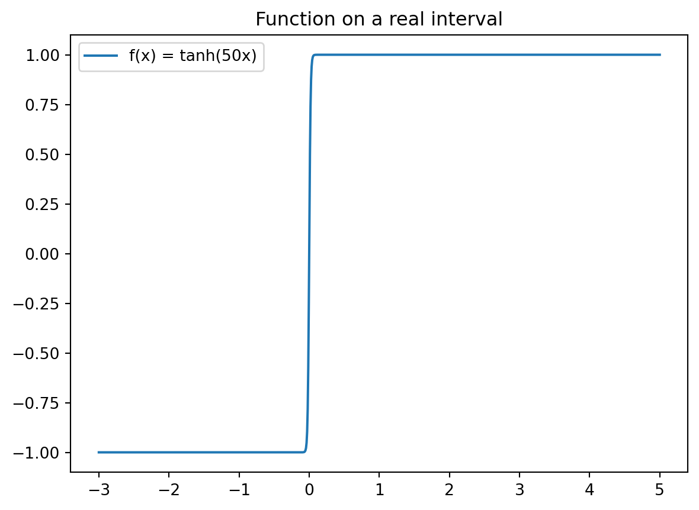

The SciPy library includes an implementation of the AAA algorithm for rational approximation in its scipy.interpolate module. Below is a comparison of pyratapprox’s AAA and Thiele continued fraction methods against SciPy’s AAA implementation.
Timing
from pyratapprox import*import numpy as npfrom scipy.interpolate import AAA as spAAAimport matplotlib.pyplot as pltx = np.linspace(-3, 5, 1000)f = np.tanh(50* x)plt.plot(x, f, label='f(x) = tanh(50x)')plt.title('Function on a real interval')plt.legend();
Detected IPython. Loading juliacall extension. See https://juliapy.github.io/PythonCall.jl/stable/compat/#IPython

Here, we generate rational approximations using all three methods:
As you see above, the results of the three methods are nearly identical in terms of the resulting rational type. Both of the AAA results use essentially the same algorithm, while TCF uses an algorithm that is asymptotically faster. The errors are all similar:
Average evaluation time over 200 runs:
scipy AAA: 132.04 microseconds
pyratapprox AAA: 109.33 microseconds
pyratapprox TCF: 84.56 microseconds
Approximation in continuous mode
In addition, pyratapprox offers automatic refinement of the domain discretization, which can safeguard against accuracy loss when singularities are present near the domain. For example, consider approximation on the unit circle of the function \(f(z) = \sqrt{1.001 + z}\). If we use 400 points in SciPy’s AAA, everything seems OK:
By approximating on the unitcircle domain without prior discretization, the algorithm automatically refines the point set to achieve the advertised accuracy:
f =lambda z: np.sqrt(1.001+ z)r = approximate(f, unitcircle) # AAA is the default methodmax_err = np.max(np.abs(test_f - r(test_pts)))print(f"In pyratapprox AAA, degree {r.degree()} achieves max observed error {max_err:.2e}")
In pyratapprox AAA, degree 27 achieves max observed error 3.10e-13